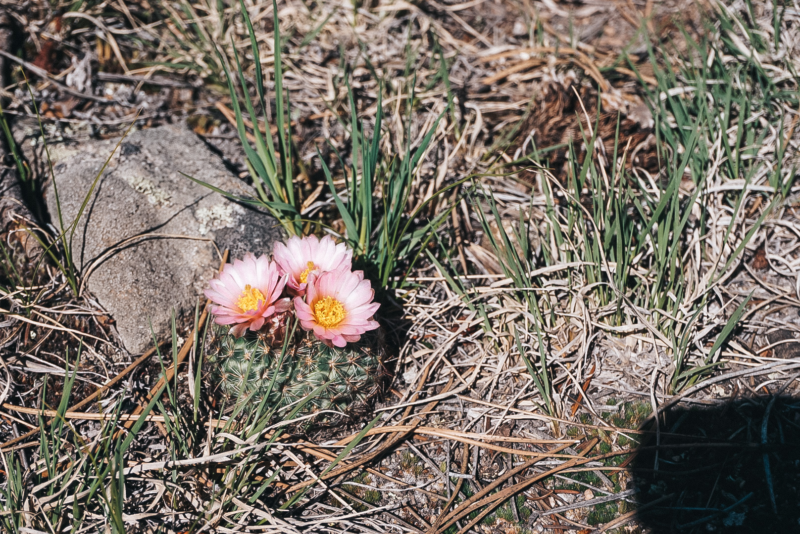

Why Estes Park?
Colorado's Original Playground
In Estes Park, you can enjoy guided adventures such as fly fishing, horseback riding, or white water rafting. You can also explore on your own by taking a scenic drive over the Continental Divide on Trail Ridge Road to Grand Lake or down the Peak to the Peak Scenic Byway.
There are plenty of lodging options available. These options range from a mountain cabin resort or a modern condo on the river.